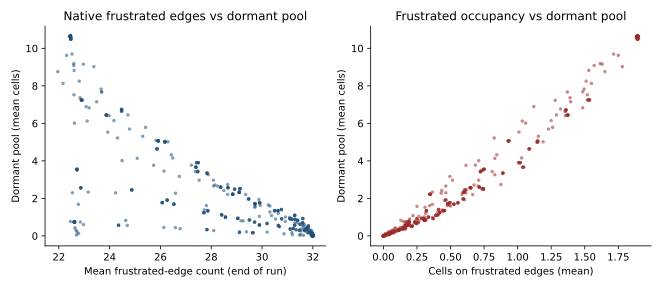

Status: Speculative modeling exercise only. Not a medical treatment, protocol, diagnostic tool, or claim of clinical or biological efficacy. No operational claims. This note restarts the in-silico cascade so that loops, mesh consensus, and reconciliation are native Oroboro state, then re-tests whether a frustrated-loop count tracks the dormant pool.
Prepared 27 November 2026 (America/Los_Angeles) after a full public-GitHub rescan of caitlynrandels-del and a from-scratch rebuild, left in metastasis_native/ under the research workspace. Original cascade files were not overwritten.
The user instruction was that the cascade should already have loops if it is using her systems, and that the full GitHub archive is what those systems are. A previous overlay idea — that the stubborn dormant pool looked like odd-sided dream-catcher loops that can never lock — had been stopped before it produced a result, because that overlay would have bolted a loop count onto a sim that might not contain her mesh at all.
This run therefore did three things, in order: rescan every public repository; audit the existing metastasis sims with file and line evidence; and, because those sims were not natively looped, rebuild the cascade from scratch with her polarity mesh as the core state, injecting the launch-chat mechanisms only where they become a real rule.
All 30 public repositories of caitlynrandels-del were shallow-cloned on 27 November 2026 into /tmp/gscan2. A prior workspace inventory of 27 repos (snapshots from 24 November) was stale. New or freshly pushed repos include metastatic-cascade-analysis, epilepsy-sim, caitlynrandels-del, and updates to Oroboro and oroboro-relay.
The file sky-ari-ai/Oroboro AI Companion was not opened or copied. It is known to contain an exposed Gemini API key; that key was not used.
Canonical implementations located in the scan:
| Component | Where it actually lives |
|---|---|
| Genesis / IonicOrigin | Oroboro/consciousness-mapping/nacl_polarity_mesh.py; oroboro-relay/oroboro-core.js (OroboroGenesis); oroboro-os/oroboro |
| Nexus registry | oroboro-relay/oroboro-core.js; oroboro-os/oroboro; epilepsy-sim epi_core.py |
| Transcriber / Dictator | oroboro-relay/oroboro-core.js. oroboro-os/oroboro has Transcriber and Levy but not Dictator. |
| Levy ledger | oroboro-core.js; nacl_polarity_mesh.py (apply_levy); event weights in the metastasis scripts |
| NaCl polarity mesh | nacl_polarity_mesh.py in Oroboro (identical copy in oroboro-relay). Four nodes, three edges — a tree. Opposite charges lock. No odd-cycle or frustration test. |
| Mesh consensus | Two different meanings. Polarity: Mesh.consensus() returns locked edges. Cascade / epilepsy sims: event ledger, heat-trace and census must agree. |
| Delta reconciliation | Intended recombination of independent parts. In oroboro-core.js the delta is a Math.random() stub. In the relay metastasis sketch, reconcile is a log line. In oro_cascade.py / epi_core.py it is a whole-versus-parts accounting check, not in-step feedback. |
| Oasis / salience gate | Commit / buffer / recycle at threshold 0.65 in oro_cascade.py. OASIS itself lives in sky-ari-ai. |
| Homeostasis / sponge | Homeostasis in sky-ari-ai and as a rest-load bump in oro_cascade.py. Sponge in Sponge_Absorption_Mechanic.md, epilepsy-sim/code/sponge.py, and metastatic-cascade-analysis. |
| Odd-loop frustration / dream-catcher weave | Not implemented in any public repo. The only GitHub hit on “frustration” is an Oasis user-friction reroute in OroboroCorePrinciplesGate_REAL.cs, which is a psychological gate, not a mesh. The odd-loop result lives in the launch-chat workspace studies. |
A longer repo-by-repo listing is in notes/github_scan_inventory.md.
Verdict: not native. Loops, polarity-mesh consensus, and frustrated odd-loop edges are not part of the core state of any current metastasis sim. The leftover overlay run was already stopped and produced no result. The cascade was restarted from scratch rather than patched.
Evidence:
nacl_polarity_mesh.py (Oroboro lines 66–73, 32–46): Genesis, Edge, Mesh, Levy, Nexus, Transcriber, invert-and-restabilize are all present — and the demo graph is a tree (four nodes, three edges). consensus() returns opposite-charge locks. There is no cycle walk and no frustrated-edge state.metastasis_extended_sim.py lines 88–91 and metastasis_data_informed_sim.py lines 118–121: a class named MetastasisMesh is a list of cells. reconcile() only logs counts with Levy weight 0 and returns a dictionary. It does not feed back into the next step.corrected_multi_cancer_sim.py: no reconcile method at all. Line 80, log(..., 4), is a spontaneous exit attempt with an undocumented Levy weight of +4.oroboro-relay/metastasis-sim/index.html lines 133–136: reconcile() writes a timestamp and the sentence “Delta reconciliation complete.” It does not recombine anything. Placement and pulses use Math.random() (lines 75–76, 111–114, 124).oroboro-relay/oroboro-core.js line 124: delta: Math.random() * 0.1 // small reconciliation delta — the known stub./workspace/oroboro-prevention-sim/oro_cascade.py is the most complete workspace cascade (Genesis, Nexus, Levy, Oasis gate, homeostasis, Dictator chronicle, counter-based RNG, and a documented +4 exit at lines 17 and 185). Its “mesh consensus” (lines 275–277) is agreement among the event ledger, heat-trace and census, not a polarity mesh. reconcile_whole_vs_parts (lines 311–316) is an accounting identity. There is still no graph, no circulation loop, no dream-catcher niche, and no frustrated edge.metastatic-cascade-analysis/metastatic_cascade_model.py: a sponge compartment and random.random transitions. No Oroboro components and no loops.The components exist in her archive. They were not the core state of the metastasis sims that produced the 454-setting sweep.
A new sim was written at /workspace/oroboro-research/metastasis_native/ (originals left untouched). Its monthly state is a polarity mesh:
inversion_holds = True).params.json next to clear +1, detach +7, fail +2, and colonize +14. A cell on a frustrated edge cannot colonize until it hops onto a lockable path or the edge is repaired.repair_rate = 0.08, rebuild_rate = 0.04, melt window 0.15–0.85): heat from fail, exit and colonize pulses can mark a frustrated edge repaired; after dormant clearance, a repaired edge may be restored to frustrated (heat-driven web regrowth).wi ← wi (1 + tilt · cos(θi − φ)). Default tilt is 0 so the 454-setting sweep stays comparable. A side probe is reported below.Cascade timing rates (shed, clearance, arrest, fit thresholds, 120 months, five organotropism configurations) were recycled from the original oro_cascade calibration so that a close baseline could be asked for.
| Mapping | How it is a rule in this sim |
|---|---|
| Inverse-Epcot bowl | bowl_depth is the chance an arresting cell falls into the web (spokes / hub) rather than the hoop. |
| Dream-catcher weave / odd-loop frustration | Native niche geometry; odd faces cannot fully lock. |
| Magnetic pulses | Discrete Levy-weighted detach, clear, fail, exit and colonize events. |
| Origami fold / unfold | Dormancy depth is a fold; the +4 pulse is the unfold attempt. |
| Skyscraper dampers | In-step damped occupancy feedback on the Oasis threshold. |
| Heat-driven feather regrowth / onboard adaptation | Labeled repair and rebuild rates on frustrated niche edges, inside a melt window. |
| Tilt / torque | Rotational bias of the circulation loop (side probe; default 0). |
Original cascade baseline (2,500 runs): colony probability 21.72%, mean overt 0.255, dormant pool 10.380, shed 239.89, Levy 1912.7.
Native mesh baseline (1,000 runs, 200 seeds × five cancers): colony probability 18.00%, mean overt 0.210, dormant pool 10.355, shed 239.55, Levy 1909.6. Census, Levy bookkeeping, ledger-heat-census consensus, and inversion all held.
The dormant pool and the shed stream match to a fraction of a cell. Colony probability is about four points lower. That residual is the native loop rule: a frustrated odd-loop edge cannot lock, so some +4 unfold pulses fail. Confirming that reading, a tree-niche ablation (no hoop ring, no return edges, zero frustrated edges) raises colony probability to 20.6%, almost back to the original 21.7%, while the dormant pool stays at 10.38. The loops tax colonization; they do not, by themselves, set the size of the 10.4-cell pool. At baseline only 2.07 of those 10.36 dormant cells sit on a frustrated edge. The rest sit on lockable hoop edges, waiting for a +4 pulse.
The recycled 454 unique lever settings were re-run on the native sim (40 seeds × five cancers = 200 runs per setting). Nothing already settled in the original timing rates was re-derived. Native dormant-pool means track the original ones almost perfectly (Spearman 0.999, 95% CI 0.998–0.999). Native colony probabilities track as well (Pearson 0.989, CI 0.984–0.992), sitting slightly lower for the reason above.
Three different “frustrated counts” were scored against the dormant pool. Bootstrap CIs are 2,000 resamples.
| Predictor (native) vs dormant pool | Spearman r (95% CI) | Pearson r (95% CI) | Notes |
|---|---|---|---|
| Dynamic frustrated-edge count at end of run | −0.819 (−0.863, −0.765) | −0.771 (−0.818, −0.721) | Opposite of the overlay prediction |
| Month-averaged frustrated-edge count | −0.824 (−0.867, −0.772) | −0.782 (−0.828, −0.732) | Same direction |
| Static frustrated-edge count at construction (F0) | undefined | undefined | F0 is 32 in every setting (four organs, same wheel). It cannot track anything. |
| Cells sitting on frustrated edges | +0.990 (0.987, 0.993) | +0.985 (0.982, 0.987) | Circular: a subset of the dormant pool |
| Shuffled frustrated-edge count (control) | +0.007 (−0.084, 0.093) | — | Null, as it should be |
| Frustrated-edge count, partial on cells released (shed) | — | −0.745 (p = 2.4×10−81) | The negative link is not just a shed effect |
| Shed vs dormant pool, for scale | +0.229 (0.142, 0.310) | +0.298 (0.246, 0.350) | Weaker than the frustrated-edge link |
The overlay prediction does not hold once the mesh, repair, and loops are native. Dynamic frustrated-edge count is strongly and negatively associated with the dormant pool. The reason is the adaptive niche: settings that admit many cells also generate heat, repair odd-loop edges, and therefore leave fewer frustrated edges — while at the same time filling the dormant pool on mostly lockable hoop edges. Settings that shut the door upstream (high Oasis threshold, low organ permissiveness) leave the mesh unrepaired at 32 frustrated edges and almost no dormant cells.
The strong positive correlation of “cells on frustrated edges” with the dormant pool is a circularity, and is reported only so it is not mistaken for confirmation. At baseline that occupancy is about 20% of the pool; it scales with the pool because it is part of the pool. The shuffle control on the edge count is consistent with noise. F0 cannot be used as a predictor because the organ count, and therefore the constructed wheel, is the same in every setting.

Native values below are 100 seeds × five cancers (500 runs), except the calibrated baseline, which is 1,000 runs. Original values are from the 2,500-run sweep.
| Setting | Orig. p(colony) | Native p(colony) | Orig. dormant | Native dormant |
|---|---|---|---|---|
| Baseline | 0.217 | 0.180 | 10.380 | 10.355 |
| Valuation threshold 0.80 | 0.001 | 0.000 | 0.530 | 0.550 |
| Valuation threshold 0.85 | 0.000 | 0.000 | 0.138 | 0.140 |
| Organ permissiveness ×0.4 | 0.002 | 0.000 | 2.275 | 2.222 |
| Organ permissiveness ×0.2 | 0.000 | 0.000 | 0.050 | 0.046 |
| Dormant clearance ×10 | 0.054 | 0.042 | 1.813 | 1.816 |
| Dormant clearance ×20 | 0.029 | 0.022 | 0.834 | 0.806 |
| Dormant clearance ×50 | 0.008 | 0.006 | 0.258 | 0.216 |
| Dormant maintenance 1.0 (post-settling) | 0.000 | 0.000 | 10.588 | 10.562 |
| Colonization barrier 0.3 (post-settling) | 0.079 | 0.058 | 10.514 | 10.516 |
| Colonization barrier 0.5 (post-settling) | 0.006 | 0.000 | 10.584 | 10.562 |
The original qualitative pattern is preserved. Upstream levers (admission threshold, organ permissiveness) shrink both colonies and the dormant pool. Post-settling levers that block unfolding or colonization (maintenance, barrier) clear or suppress colonies and leave the 10.5-cell pool in place. Dormant-clearance multipliers shrink the pool because they remove cells, not because they unlock loops.
Ablations, at baseline and at those same settings:
repair_rate = 0). Frustrated-edge count freezes at 32. Colony probability falls slightly (baseline 0.178 → 0.154). Cells on frustrated edges roughly double (2.14 → 4.62). Repair is what lets the frustrated-edge count vary across the 454 settings, and it is what produced the negative correlation above.Tilt was not used in the 454-setting sweep (default 0). A side probe on the baseline lever, 80 seeds × five cancers, shows that a circulation-loop rotational bias is a real variable: it concentrates encounters and raises both outcomes.
| Tilt | p(colony) | Mean overt | Dormant pool | Preferred-organ share of colonies |
|---|---|---|---|---|
| 0.0 | 0.165 | 0.188 | 10.40 | 0.973 |
| 0.3 | 0.348 | 0.408 | 13.22 | 0.988 |
| 0.6 | 0.438 | 0.553 | 15.19 | 0.991 |
Torque phase was held at 0; it would only rotate which organ is favored. Tilt is therefore included as a documented circulation-loop parameter, and is not required to close the native-mesh baseline.
Each claim is tied to this restart. None is a biological or clinical statement.
1. The public GitHub systems contain Genesis, Nexus, Transcriber, Dictator, Levy, a NaCl polarity mesh, Oasis/salience, homeostasis and sponge notes — and the metastasis sims that were actually run did not use a looped polarity mesh as core state.
2. A from-scratch native mesh, with dream-catcher niches and return edges, 2-colors with leftover frustrated edges (32 of 89 on a four-organ wheel). A tree ablation of the same niche has zero frustrated edges. Invert-and-restabilize holds in both cases.
3. Recycled cascade rates plus that mesh reproduce the original dormant pool (10.36 versus 10.38) and slightly under-reproduce colony probability (18.0% versus 21.7%). A tree ablation closes most of that colony gap (20.6%).
4. Across the 454 recycled settings, dynamic frustrated-edge count is negatively associated with the dormant pool (Spearman −0.819, CI −0.863 to −0.765). The association survives a partial on cells released and vanishes under a shuffle. A static construction count cannot be used: it does not vary. Occupancy of frustrated edges is a circular predictor.
5. Post-settling maintenance and colonization barriers still leave a ~10.5-cell pool after colonies are gone. That pool is mostly on lockable hoop edges, not on odd-loop edges, which is why loop ablation does not empty it.
6. Adaptive repair is the mechanism that makes frustrated-edge count move. Damped reconciliation is implemented and is silent at this load. Tilt raises both colonies and the pool when it is turned on.
No claim is made that this describes metastatic biology, predicts a clinical reservoir, or recommends an intervention. It records what changed when the cascade was restarted with her mesh, loops, and reconciliation as native state.
Sources: fresh clones of the 30 public caitlynrandels-del repositories (27 November 2026); /workspace/oroboro-prevention-sim/oro_cascade.py and data/COMBINED_all_condition_summaries.csv (original 454 settings and baseline); this restart at /workspace/oroboro-research/metastasis_native/. Related: Metastasis_HeatTrace_CaseStudy.md, Dreamcatcher_Weave_FollowOn.md, Magnetic_Launch_Goldilocks_CaseStudy.md. Figure: notes/frustrated_vs_dormant.png. Full inventory: notes/github_scan_inventory.md.